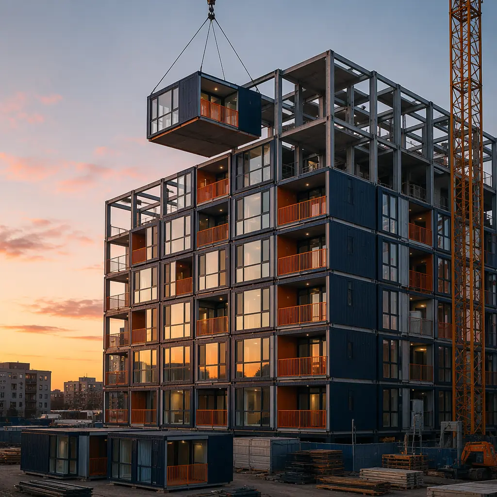
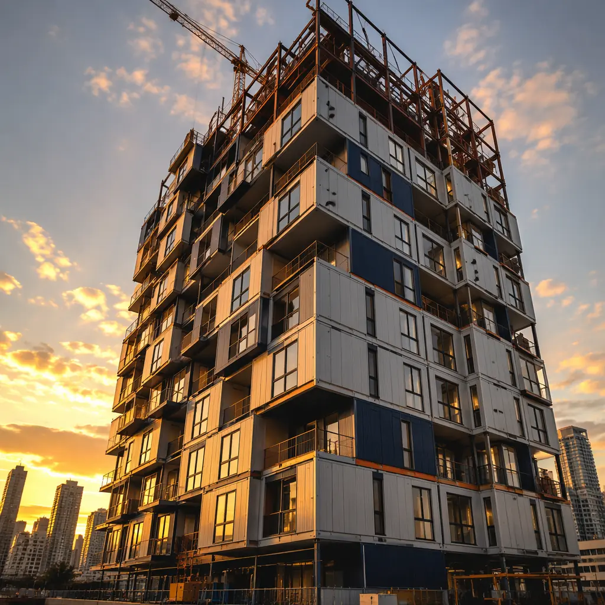
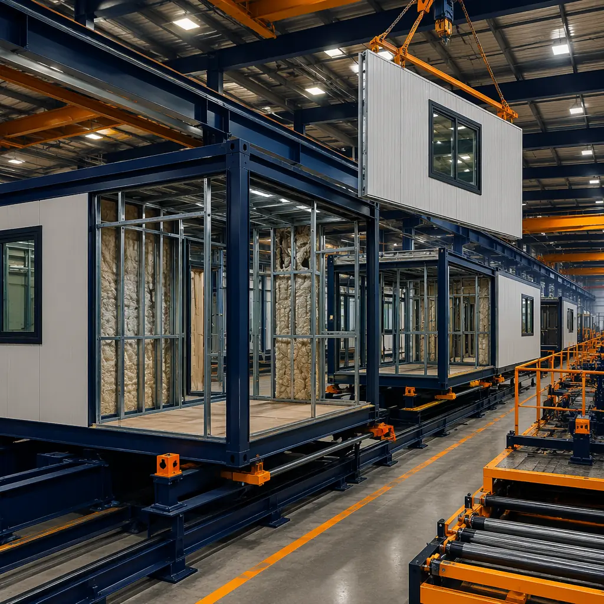
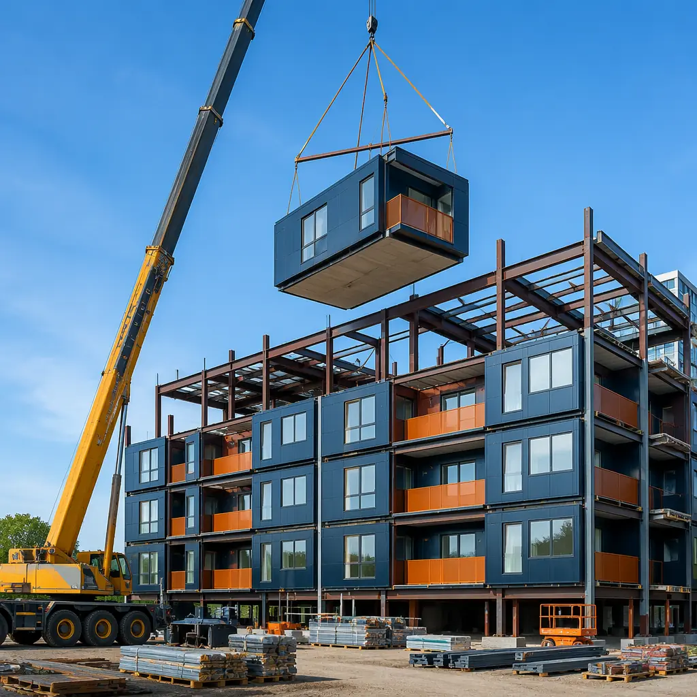

If you're underwriting a multi-family development in 2026, you need hard numbers — not ballpark ranges from 2019. Modular apartment construction costs have shifted significantly over the past 24 months. Steel pricing has stabilized after the 2022–2023 volatility, factory capacity in North America has expanded, and a growing body of completed projects provides real cost data that didn't exist five years ago.
This guide delivers the specific cost benchmarks, unit-type pricing, and developer-side financial analysis you need to evaluate modular for your next apartment project. Every number comes from projects completed between 2023 and 2026 across the United States and Canada. For a broader overview of the modular apartment opportunity, start with our complete developer's guide to modular apartments.

2026 Modular Apartment Cost Benchmarks
The all-in cost for modular apartment construction in 2026 ranges from $145 to $225 per square foot, depending on unit mix, building height, site conditions, and regional labor markets. This is an all-in number: factory manufacturing, transportation, crane setting, finishes, MEP rough-ins, and site completion. It does not include land acquisition, soft costs, or developer fees.
| Building Type | Cost/sq ft (All-In) | Typical Unit Count | Factory Share |
|---|---|---|---|
| Garden-style (2–3 stories) | $145 – $175 | 24 – 72 | 65–75% |
| Mid-rise (4–6 stories) | $165 – $205 | 48 – 200 | 55–70% |
| Podium-style (5-over-1, 5-over-2) | $175 – $225 | 60 – 300 | 50–65% |
| High-rise (≥7 stories) | $195 – $250 | 100 – 500+ | 40–55% |
The "factory share" column is critical: it represents the percentage of total construction value completed under roof before modules ever leave the plant. Higher factory share means less weather exposure, tighter quality control, and fewer schedule variables. Garden-style apartments hit 75% factory completion — modules arrive with fixtures, cabinetry, flooring, and MEP already installed, needing only interconnection on site.
For context on how these numbers compare across building types, see our construction cost per square foot guide which covers office, healthcare, hospitality, and retail alongside multi-family.
Cost Breakdown by Apartment Unit Type
Not all apartment units cost the same to build. The bathroom and kitchen are the two most expensive rooms in any apartment, and smaller units have a higher cost per square foot because those expensive rooms represent a larger share of total area. Here is the 2026 unit-level pricing for typical modular apartment configurations:
| Unit Type | Typical Size | Cost/Unit (Factory) | Cost/sq ft | Modules per Unit |
|---|---|---|---|---|
| Studio / Micro | 350 – 450 sq ft | $55,000 – $75,000 | $157 – $167 | 1 |
| 1-Bedroom | 550 – 750 sq ft | $85,000 – $120,000 | $155 – $160 | 1 – 2 |
| 2-Bedroom | 850 – 1,100 sq ft | $125,000 – $175,000 | $147 – $159 | 2 |
| 3-Bedroom | 1,100 – 1,400 sq ft | $165,000 – $215,000 | $150 – $154 | 2 – 3 |
Two patterns are worth noting. First, cost per square foot decreases as unit size increases — the expensive kitchen and bathroom get amortized over more living area. A 3-bedroom unit at $150/sq ft is meaningfully cheaper per square foot than a studio at $167/sq ft. Second, single-module studios represent the fastest deployment path: one crane pick, one set of utility connections, one unit ready for trim-out in under an hour from arrival.

What Drives Modular Apartment Costs Up (and Down)
Developers frequently ask us: "What makes one modular apartment project $50/sq ft more expensive than another that looks identical?" Five variables account for roughly 80% of the cost spread between projects:
1. Unit Mix and Repetition
The single biggest cost lever in modular apartment construction is how many times you repeat the same unit layout. A project with four unit types repeated 25 times each will cost 12–18% less per square foot than a project with 12 unit types repeated 8 times each. Repetition reduces engineering hours, streamlines factory assembly, and eliminates the learning curve on each new layout. Every unique unit type adds approximately $4,000–$7,000 in engineering and tooling setup.
2. Building Height and Structural System
Garden-style apartments (2–3 stories) can use load-bearing modular frames, keeping the structural system entirely within the module. At 4 stories and above, you typically need a steel or concrete superstructure to carry lateral loads, adding $15–$30/sq ft. Above 6 stories, fire suppression requirements escalate — standpipes, pressurized stairwells, and fire-rated corridor assemblies add another $8–$15/sq ft. These costs are not unique to modular, but they affect the modular-to-traditional comparison because the factory share drops as structure gets more complex.
3. Site Logistics and Crane Access
A 200-ton mobile crane with full site access can set 8–12 modules per day. A constrained urban site that requires a tower crane or street closures might manage only 4–6 modules per day. The difference: roughly $3–$5/sq ft in crane and logistics costs. Laydown space for module staging before setting is another variable — projects with zero laydown space (modules trucked in and set immediately) pay a 5–8% logistics premium versus projects with staging room.
4. Regional Labor and Transportation
Factory labor rates vary by region, but the bigger variable is site labor. In markets like the Bay Area or Boston where skilled trades bill at $85–$120/hour, module setting and interconnection labor adds $10–$18/sq ft more than in markets like Dallas or Atlanta where rates run $45–$65/hour. Transportation cost is driven by distance from the factory: under 300 miles, expect $2–$4/sq ft; 300–800 miles, $5–$8/sq ft; over 800 miles, $8–$12/sq ft. MODURA's North American manufacturing footprint keeps most projects within the under-300-mile band.

5. Finish Level
MODURA's standard apartment finish package — LVP flooring, quartz countertops, soft-close cabinetry, stainless steel appliances, and tile bathroom surrounds — is included in the benchmarks above. Upgrading to hardwood flooring adds $3–$5/sq ft; floor-to-ceiling windows add $4–$7/sq ft; smart home packages (Lutron lighting, Nest thermostats, keyless entry) add $2–$4/sq ft. The factory environment makes high-end finishes more achievable because there's no weather exposure between dry-in and finish installation — hardwood and millwork never sit in the rain.
Modular vs Traditional: The Real Cost Comparison
The question isn't "is modular cheaper per square foot?" — that's the wrong framing. The right question is "what does modular do to my total project budget and schedule?" Here is the comparison for a representative 80-unit, 4-story mid-rise in a mid-cost US market:
| Cost Category | Modular | Traditional | Delta |
|---|---|---|---|
| Hard construction cost (/sq ft) | $185 | $175 | +$10 |
| Total hard cost (80,000 sq ft) | $14.8M | $14.0M | +$800K |
| Construction timeline | 9 months | 16 months | −7 months |
| Construction loan interest (8.5% on 70% LTC) | $663K | $1.18M | −$517K |
| Early rent revenue (80 units × $1,800/mo × 7 months) | $1.01M | — | +$1.01M |
| Net Project Budget Impact | $15.46M | $15.18M | −$283K |
| Months to 90% Occupancy | 12 | 19 | −7 |
The hard-cost premium of $800K is more than offset by $517K in reduced interest carry and $1.01M in early rent, netting the modular project roughly $727K ahead on a cash basis before considering risk reduction. For a detailed walkthrough of this financial analysis framework, see our modular construction ROI guide for developers.
Timeline Compression: The Hidden Cost Advantage
Most developers understand that modular is faster. What they underestimate is the compounding financial effect of that speed. Here is the math for the 80-unit project above:
- Site work and foundation: 8–10 weeks — identical for both approaches
- Superstructure and enclosure: 4–5 weeks modular (module setting) vs 12–16 weeks traditional (steel/wood framing, sheathing, roofing, windows)
- MEP rough-in: 85–90% complete in factory for modular; 6–10 weeks traditional (parallel trades, weather-dependent)
- Interior finishes: 4–6 weeks modular (interconnection, corridor finishes, punch list) vs 8–12 weeks traditional
- Total site duration: 16–21 weeks modular vs 28–38 weeks traditional
The 7-month gap isn't just about finishing earlier — it fundamentally changes the project's risk profile. A 16-month traditional construction window exposes the developer to two full construction seasons of weather risk, two rounds of material price escalation, and the real possibility of labor shortages during peak summer months. A 9-month modular schedule compresses exposure to a single construction season. Our modular construction timeline guide breaks down each phase in detail.

Site Work and Foundation Costs
Site work is the one cost category where modular and traditional converge. Foundation, utilities, grading, stormwater management, and paving cost roughly the same regardless of construction method. For the 80-unit project, expect $1.2–$1.8M in site work, or $15–$22/sq ft. The only modular-specific site cost is the crane pad and module staging area, which typically adds $25,000–$50,000 to the site budget — less than 0.3% of total project cost.
One advantage modular brings to site work: because the superstructure goes up in weeks rather than months, site contractors can work in a compressed window. Fencing, security, portable toilets, and general conditions costs that run $15,000–$25,000/month on a traditional site get cut by 40–50% on a modular project simply because there are fewer months of site activity.
Hidden Cost Factors Most Developers Miss
Beyond the line items that show up on every pro forma, modular apartment construction shifts costs in ways that aren't immediately obvious:
Weather-Related Waste and Rework
Traditional construction loses 3–7% of framing lumber and 2–4% of drywall to weather exposure, plus the labor to replace it. A factory-built module sees zero weather exposure during assembly. On an 80-unit project, weather waste alone can exceed $180,000 in material and labor that modular eliminates entirely.
Theft and Vandalism
Open construction sites lose an estimated 0.5–1.5% of materials to theft and vandalism. Copper wiring, appliances, and tools are the most common targets. A modular project where finished modules arrive sealed and are set within days dramatically reduces the window of vulnerability.
Insurance Premiums
Builder's risk insurance on a modular project runs 15–25% lower than traditional because the exposure period is shorter and less material sits on site unsecured. On an $18M project, that's a $12,000–$20,000 savings that few developers include in their initial comparison.
Quality-Related Callbacks
Factory construction produces measurably fewer defects. Our average defect rate at module delivery is 0.8 items per module, compared to 2.5–4 items per unit in traditional site-built apartments. Each defect discovered post-occupancy costs $150–$500 in warranty labor — a 70% reduction in defects translates to real operating savings during the warranty period. For a complete analysis of long-term cost performance, read our modular building lifecycle cost guide.
Financing Modular Apartment Projects
Modular construction has a cash-flow profile that differs from traditional, and developers need to structure their financing accordingly. In traditional construction, draws are monthly against work-in-place — the lender's inspector visits the site, certifies percentage of completion, and the draw funds. In modular, significant value is created at the factory before anything appears on site.
The industry has adapted. Major construction lenders now offer modular-compatible draw schedules that release payment against factory completion milestones: 20–25% at module manufacturing start, 35–40% at factory completion and inspection sign-off, 15–20% upon module delivery to site, and the remaining 20–25% against site completion milestones. Fannie Mae and Freddie Mac both accept modular construction in their multi-family lending programs, and HUD's 221(d)(4) program has explicit provisions for modular and off-site construction.
One financing nuance: because modular projects reach completion and lease-up faster, the permanent loan conversion (construction-to-perm) happens 5–8 months earlier. A permanent loan at 6.5% versus a construction loan at 8.5% saves $2,000–$3,000 per month per $1M of outstanding balance. On a $10M loan balance, that's $20,000–$30,000/month in interest savings for every month of earlier conversion. Our modular construction financing guide covers lender requirements, draw schedules, and program eligibility in detail.
How to Get an Accurate Price for Your Project
If you are underwriting a specific project, here is what you need to provide to get a meaningful modular cost estimate rather than a range:
- Unit mix and count — breakdown by studio, 1BR, 2BR, 3BR with target square footages
- Site address or general location — drives transportation cost, local labor rates, and seismic/wind design requirements
- Building height and configuration — number of stories, approximate footprint, podium or slab-on-grade
- Finish level — rental-grade, mid-market, or luxury; specific material preferences if any
- Target timeline — ideal construction start and lease-up target dates
With these five data points, MODURA's engineering team can produce a ±10% budget estimate within 5 business days. The estimate includes a unit-by-unit cost breakdown, factory schedule, site logistics plan, and a preliminary module transportation analysis. Projects that proceed to detailed design receive a guaranteed maximum price (GMP) contract with a ±5% contingency.
The Bottom Line for Multi-Family Developers
Modular apartment construction in 2026 is not universally cheaper per square foot than traditional. The all-in hard cost premium of roughly $10–$15/sq ft for mid-rise projects is real. But the premium is consistently outweighed by the financial benefits: carrying cost reduction, earlier revenue, lower risk exposure, and measurably higher construction quality.
For developers who measure success by IRR and cash-on-cash return rather than cost per square foot, modular pencils out. The developers we work with report 120–180 basis point IRR improvements on modular apartment projects compared to traditional construction — driven not by hard cost savings but by the compounding effect of 7–9 months of earlier occupancy.
If you are evaluating modular for an upcoming multi-family project, start with the numbers. Get a project-specific estimate. Run the carrying cost analysis. Model the lease-up acceleration. Chances are, the math will point in one direction.